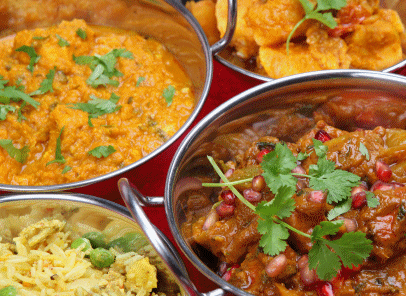

Indian cuisine encompasses a wide variety of regional cuisines native to India. Given the range of diversity in soil type, climate and occupations, these cuisines vary significantly from each other and use locally available spices, herbs, meat, vegetables, and fruits. Indian food is also heavily influenced by religious and cultural choices.